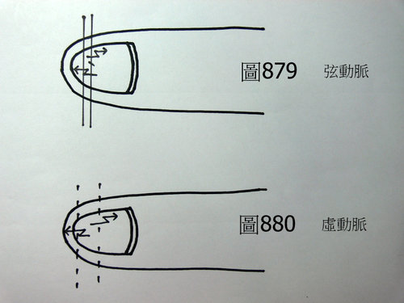
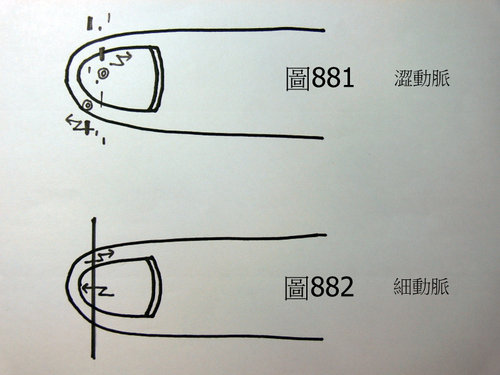

脈理醫理學 33.14：動脈
作者：陳建元
說明：
凡是指頭下的脈跳軌跡不穩定，會沿著水平面方向，朝左右兩邊抖動或振動的，可以定義為「動脈」，單獨的動脈並無法自己形成一個有意義的脈象，必須與其他的脈象相兼，才能形成一個完整而有意義的脈象。如〈圖879〉是弦動脈；〈圖880〉是虛動脈；〈圖881〉是澀動脈；〈圖882〉是細動脈。


本質和病機：
有實證與虛證兩種不同的意義。在實證時，主驚主痛，主實證的痰火實邪已經超過了身體所能承受的負荷，故脈象抖動（發抖）；在虛證時，主身體的虛損，已經超過了身體所能承受的負荷，身體已經快承受不住了，故脈象抖動（發抖）。在理解上，在實證的時候，可以想像譬如有60公斤能耐的人，去舉重65公斤的槓鈴，已經超過身體的負荷，故身體發抖；在虛證的時候，可以想像譬如三日沒吃飯，則正氣匱乏，體力不支，故發抖。
兼脈：
兼滑大數、實大數、弦滑大數脈之類脈象的是因為實熱、實痰過盛不支而脈象抖動；兼沉緊、沉弦緊、沉澀脈之類脈象的是因為氣滯血瘀、疼痛不支而脈象抖動（譬如一時受到嚴重的外傷撞擊）；兼虛脈、微弱脈之類脈象的是因為正氣不支而脈象抖動（表示已經虛損日久或是短期內較嚴重的虛損）。
六部動脈：
右寸動脈：實證時為氣喘、為肺系疼痛；虛證時為氣喘。
右關動脈：實證時為過度的腹瀉腹脹、為脾系、腸胃疼痛；虛證時為消化不良、為腹瀉腹脹。
右尺動脈：實證時為下腹或脹、或瀉、或疼痛；虛證時為下腹或脹、或瀉、為容易手冷足冰、為虛損而氣力不支。
左寸動脈：實證時為氣喘、為心痛、為頭痛；虛證時為氣喘、為胸悶、為頭暈。
左關動脈：實證時為過度的發怒（盛怒）、為高血壓欲中風；虛證時為頭暈、為目眩。
左尺動脈：實證時為下腹或脹、或疼痛、或小便壅閉；虛證時為虛損氣力不支、為容易疲累耐力差。
另外人的情緒過度驚訝時，脈象也會產生抖動的現象（即也會產生動脈）。
治療藥物：
按照歸入該部脈的藥物來用藥。實證時則看其兼脈為何來分析病機為何而用藥，譬如兼滑大數、實大數、弦滑大數脈之類脈象的是因為外感、實熱、實痰過盛不支而脈象抖動，故要急瀉其外感、實熱、實痰，則脈象就不會抖動不穩；兼沉緊、沉弦緊、沉澀脈之類脈象的是因為氣滯血瘀、疼痛不支而脈象抖動（譬如一時受到嚴重的外傷撞擊），故要用止血、理氣活血、活血攻下等方法急瀉其實瘀而減少疼痛，則脈象自然不再抖動；兼虛脈、微弱脈之類脈象的是因為正氣不支而脈象抖動（表示已經虛損日久或是短期內較嚴重的虛損），故要急補其虛損，則脈象不再抖動。
另外就是因為脈象抖動不穩，所以上述用藥的時候，通常還要再加用該部脈的收斂藥或是鎮靜平風藥，療效才佳。譬如肺虛而抖，可加用五味子、遠志、合歡皮、烏梅之類；脾虛而抖，可加用烏梅、蓮子之類；腎脈虛損而抖，可加用山茱萸、牡蠣、五味子之類；心虛而抖，可加用酸棗仁、柏子仁、龍齒、夜交藤之類；肝實而抖，可加用鉤藤、石決明、代赭石之類；肝虛而抖，可加用白芍、酸棗仁、柏子仁、夜交藤之類。
【引用請先來信告知徵求同意，若有涉及販售營利等商業行為，版權所有拷貝盜用必究。】
【藥王脈學講壇】http://blog.xuite.net/drjychen/twblog